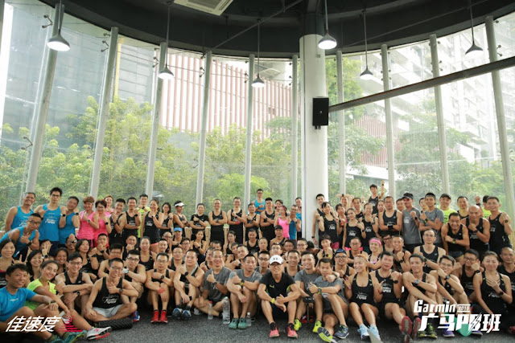
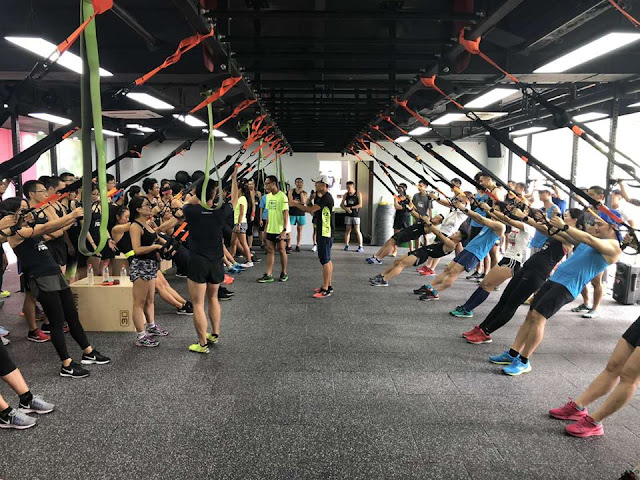
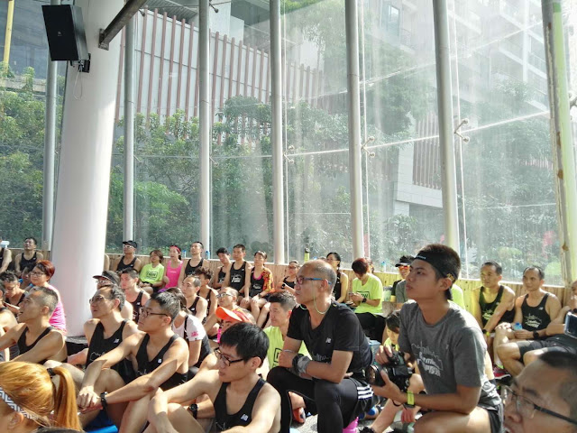
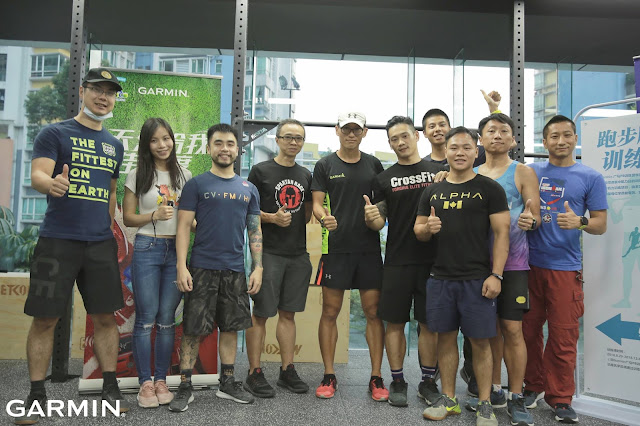
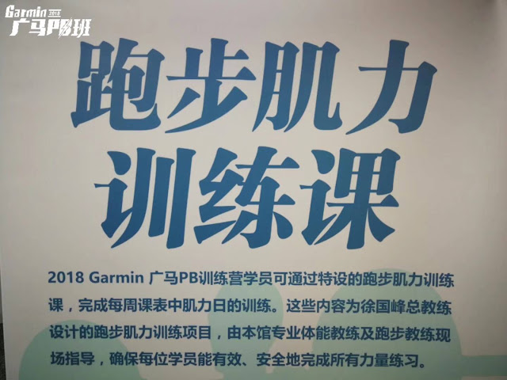

← 回部落格
Garmin 廣馬 PB 班之力量專項訓練

這次 Garmin 廣馬 PB 班因為 Sunny 與 Joker 的關係，我們有了跑者專項的力量訓練場館與後續的合作課程，課表設計好後，在先修課中我們帶領一百多位跑者一起進行力量動作的教學，接下來的每週三、週五再請跑者到場館來做訓練，由專業教練指導動作，確認動作品質以及確認動作的倒階或進階，該加重或減輕負荷……等，這都是為了降低受傷風險與確保訓練效果。
「跟場館合作一起進行先修課與後續開課」是過去在帶領跑步訓練營中所沒有的，此次是一項新嘗試。先修課算是順利過關了。畢竟自己沒有太多在場館裡帶過力量訓練課的經驗，而且還一次一百多人，還好有專業的教練協助。未來，在廣州我們期待透過這次機會，把跑步的力量訓練專項化，而且融入到訓練場館與跑步訓練的體系之中。
Sunny 還提到一個非常棒的概念，由專業的場館來執行物理治療師的運動處方，由學員帶著處方來訓練場館，讓專業的教練來進行動作教學。
這是一次非常好的開始，使跑者的力量訓練能夠逐步朝著專項化發展，造福更多跑者，形成正向的跑步訓練文化與產業鏈。昨天晚上剛好也跟 Jason 聊到，若有機會的話，台灣也希望以這種形式來展開：
使跑步訓練「去中心化」(decentralization)，跑者在參加訓練營前可以先在「跑步技術訓練營」與「跑步力量訓練營」磨過一段時間，再來參加針對特定賽事的跑步訓練營，受傷風險將大大降低，訓練起來的效果也會更好，我們在訓練營中就不用再去教太多動作，只要引導跑者專心把課表練好就好。




徐國峰・KFCS 耐力訓練系統
看更多文章 →